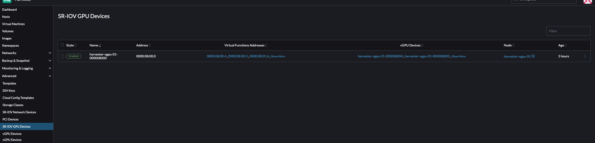
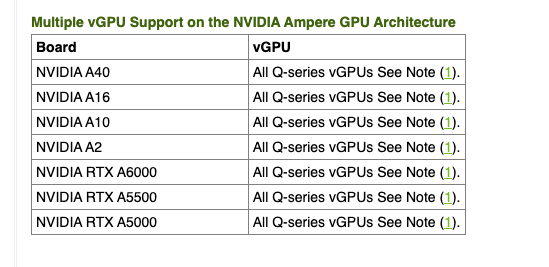

|
本文档采用自动化机器翻译技术翻译。 尽管我们力求提供准确的译文，但不对翻译内容的完整性、准确性或可靠性作出任何保证。 若出现任何内容不一致情况，请以原始 英文 版本为准，且原始英文版本为权威文本。 |
vGPU支持
SUSE Virtualization 能够共享针对单根IO虚拟化(SR-IOV)的 NVIDIA GPU 支持。此附加功能由pcidevices-controller附加产品提供，利用`sriov-manage`进行GPU管理。
要确定您的GPU是否支持SR-IOV，请检查设备文档。有关创建支持SR-IOV的NVIDIA vGPU的更多信息，请参见 NVIDIA文档。
您必须启用nvidia-driver-toolkit附加产品，以便能够管理GPU设备上的vGPU生命周期。
用法
-
在用户界面上，转到*高级→ SR-IOV GPU设备*并验证以下内容：
-
GPU设备已被扫描。
-
已创建相关的`sriovgpudevices.devices.harvesterhci.io`对象。

-
-
找到您想要启用的设备，然后选择*⋮ → 启用*。

-
转到*vGPU设备*屏幕并检查相关的`vgpudevices.devices.harvesterhci.io`对象。
请允许一些时间让pcidevices-controller扫描vGPU设备，并让SUSE Virtualization用户界面显示设备信息。

-
选择一个vGPU并配置一个控制文件。

控制文件列表取决于GPU和主机的/sys树。有关可用控制文件及其功能的更多信息，请参见 NVIDIA文档。
在您选择第一个控制文件后，NVIDIA驱动程序会自动配置剩余vGPU的可用控制文件。
-
将vGPU附加到新的或现有的虚拟机。

一旦vGPU被分配给虚拟机，可能无法禁用该虚拟机，直到vGPU被去除。
MIG支持的vGPU设备
|
以下信息仅适用于支持多实例GPU(MIG)分区的NVIDIA GPU，例如A100、H100和H200。 |
SUSE Virtualization允许 MIG支持的vGPU在虚拟机之间共享。MIG支持的vGPU存在于支持MIG的物理GPU的GPU实例上。每个驻留的 MIG 支持的 vGPU 独占访问 GPU 实例的引擎，包括计算和视频解码引擎。
SUSE Virtualization 仅在检测到的 GPU 支持基于 MIG 的分区时创建 MIGConfiguration 对象。
启用 MIG 支持的 vGPU 设备
-
在 SUSE Virtualization 界面上，转到 高级 → vGPU MIG 配置 并验证以下内容：
-
已为支持 GPU 设备创建 MIG 配置。
-
已创建相关的`migconfiguration.devices.harvesterhci.io`对象。
-
-
定义您的GPU的MIG控制文件并启用MIG配置。
请参考 GPU 的文档以获取有关 MIG 配置和可用组合的信息。

-
转到 高级 → vGPU 设备 并启用与 MIG 配置相关联的 vGPU 设备。
新创建的 MIG 控制文件作为有效的 vGPU 类型可用。
一旦启用，vGPU 设备可以与虚拟机一起使用。

局限性
附加多个 vGPU
将多个 vGPU 附加到虚拟机可能因以下原因而失败：
-
并非所有 vGPU 控制文件都支持附加多个 vGPU。 NVIDIA 文档 列出了支持此功能的 vGPU 控制文件。例如，如果您使用 NVIDIA A2 或 A16 GPU，请注意只有 Q 系列 vGPU 允许您附加多个 vGPU。

-
在虚拟机定义中只能有 1 个 GPU 设备启用
ramFB。要附加多个 vGPU，您必须编辑 VM 配置（YAML 格式），并将virtualGPUOptions添加到所有非主 vGPU 设备。virtualGPUOptions: display: ramFB: enabled: false
可用 vGPU 的上限
当 GPU 上启用 vGPU 支持时，NVIDIA 驱动程序默认创建 16 个 vGPU 设备。在您选择第一个控制文件后，NVIDIA 驱动程序会自动配置剩余 vGPU 的可用控制文件。
所使用的控制文件还决定了每个 GPU 可用的最大 vGPU 数量。一旦达到最大值，剩余的 vGPU 将无法选择任何控制文件，并且这些设备无法配置。
示例 (NVIDIA A2 GPU):
如果您选择 NVIDIA A2-4Q 控制文件，则只能配置 4 个 vGPU 设备。一旦这些设备被配置，您将无法为剩余的 vGPU 选择任何控制文件。

技术深入分析
pcidevices-controller 引入了以下 CRD：
-
sriovgpudevices.devices.harvesterhci.io
-
vgpudevices.devices.harvesterhci.io
在启动时，pcidevices-controller 扫描主机以查找支持 SR-IOV vGPU 设备的 NVIDIA GPU。当找到此类设备时，它们将作为 CRD 表示。
示例：
apiVersion: devices.harvesterhci.io/v1beta1
kind: SRIOVGPUDevice
metadata:
creationTimestamp: "2024-02-21T05:57:37Z"
generation: 2
labels:
nodename: harvester-kgd9c
name: harvester-kgd9c-000008000
resourceVersion: "6641619"
uid: e3a97ee4-046a-48d7-820d-8c6b45cd07da
spec:
address: "0000:08:00.0"
enabled: true
nodeName: harvester-kgd9c
status:
vGPUDevices:
- harvester-kgd9c-000008004
- harvester-kgd9c-000008005
- harvester-kgd9c-000008016
- harvester-kgd9c-000008017
- harvester-kgd9c-000008020
- harvester-kgd9c-000008021
- harvester-kgd9c-000008022
- harvester-kgd9c-000008023
- harvester-kgd9c-000008006
- harvester-kgd9c-000008007
- harvester-kgd9c-000008010
- harvester-kgd9c-000008011
- harvester-kgd9c-000008012
- harvester-kgd9c-000008013
- harvester-kgd9c-000008014
- harvester-kgd9c-000008015
vfAddresses:
- "0000:08:00.4"
- "0000:08:00.5"
- "0000:08:01.6"
- "0000:08:01.7"
- "0000:08:02.0"
- "0000:08:02.1"
- "0000:08:02.2"
- "0000:08:02.3"
- "0000:08:00.6"
- "0000:08:00.7"
- "0000:08:01.0"
- "0000:08:01.1"
- "0000:08:01.2"
- "0000:08:01.3"
- "0000:08:01.4"
- "0000:08:01.5"
当启用 SRIOVGPUDevice 时，pcidevices 控制器与 nvidia-driver-toolkit daemonset 一起工作以管理 GPU 设备。
在 pcidevices 对 /sys 树的后续扫描中，vGPU 设备由 pcidevices 控制器扫描并作为 VGPUDevices CRD 进行管理。
NAME ADDRESS NODE NAME ENABLED UUID VGPUTYPE PARENTGPUDEVICE harvester-kgd9c-000008004 0000:08:00.4 harvester-kgd9c true dd6772a8-7db8-4e96-9a73-f94c389d9bc3 NVIDIA A2-4A 0000:08:00.0 harvester-kgd9c-000008005 0000:08:00.5 harvester-kgd9c true 9534e04b-4687-412b-833e-3ae95b97d4d1 NVIDIA A2-4Q 0000:08:00.0 harvester-kgd9c-000008006 0000:08:00.6 harvester-kgd9c true a16e5966-9f7a-48a9-bda8-0d1670e740f8 NVIDIA A2-4A 0000:08:00.0 harvester-kgd9c-000008007 0000:08:00.7 harvester-kgd9c true 041ee3ce-f95c-451e-a381-1c9fe71918b2 NVIDIA A2-4Q 0000:08:00.0 harvester-kgd9c-000008010 0000:08:01.0 harvester-kgd9c false 0000:08:00.0 harvester-kgd9c-000008011 0000:08:01.1 harvester-kgd9c false 0000:08:00.0 harvester-kgd9c-000008012 0000:08:01.2 harvester-kgd9c false 0000:08:00.0 harvester-kgd9c-000008013 0000:08:01.3 harvester-kgd9c false 0000:08:00.0 harvester-kgd9c-000008014 0000:08:01.4 harvester-kgd9c false 0000:08:00.0 harvester-kgd9c-000008015 0000:08:01.5 harvester-kgd9c false 0000:08:00.0 harvester-kgd9c-000008016 0000:08:01.6 harvester-kgd9c false 0000:08:00.0 harvester-kgd9c-000008017 0000:08:01.7 harvester-kgd9c false 0000:08:00.0 harvester-kgd9c-000008020 0000:08:02.0 harvester-kgd9c false 0000:08:00.0 harvester-kgd9c-000008021 0000:08:02.1 harvester-kgd9c false 0000:08:00.0 harvester-kgd9c-000008022 0000:08:02.2 harvester-kgd9c false 0000:08:00.0 harvester-kgd9c-000008023 0000:08:02.3 harvester-kgd9c false 0000:08:00.0
当用户启用并为`VGPUDevice`选择控制文件时，pcidevices控制器会配置该设备，并在其上设置正确的控制文件。
apiVersion: devices.harvesterhci.io/v1beta1
kind: VGPUDevice
metadata:
creationTimestamp: "2024-02-26T03:04:47Z"
generation: 8
labels:
harvesterhci.io/parentSRIOVGPUDevice: harvester-kgd9c-000008000
nodename: harvester-kgd9c
name: harvester-kgd9c-000008004
resourceVersion: "21051017"
uid: b9c7af64-1e47-467f-bf3d-87b7bc3a8911
spec:
address: "0000:08:00.4"
enabled: true
nodeName: harvester-kgd9c
parentGPUDeviceAddress: "0000:08:00.0"
vGPUTypeName: NVIDIA A2-4A
status:
configureVGPUTypeName: NVIDIA A2-4A
uuid: dd6772a8-7db8-4e96-9a73-f94c389d9bc3
vGPUStatus: vGPUConfigured
pcidevices 控制器还运行 vGPU 设备插件，向 kubelet 广告各种 vGPU 控制文件的详细信息。这随后被 k8s 调度程序用于将请求 vGPU 的 VM 放置到正确的节点。
(⎈|local:harvester-system)➜ ~ k get nodes harvester-kgd9c -o yaml | yq .status.allocatable cpu: "24" devices.kubevirt.io/kvm: 1k devices.kubevirt.io/tun: 1k devices.kubevirt.io/vhost-net: 1k ephemeral-storage: "149527126718" hugepages-1Gi: "0" hugepages-2Mi: "0" intel.com/82599_ETHERNET_CONTROLLER_VIRTUAL_FUNCTION: "1" memory: 131858088Ki nvidia.com/NVIDIA_A2-4A: "2" nvidia.com/NVIDIA_A2-4C: "0" nvidia.com/NVIDIA_A2-4Q: "2" pods: "200"
pcidevices控制器还设置与kubevirt的集成，并在Kubevirt CR中将vGPU设备公告为外部管理的设备，以确保虚拟机能够使用vGPU。